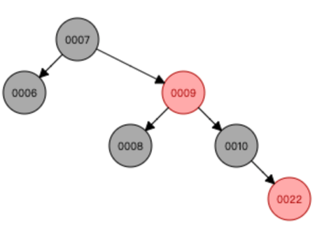
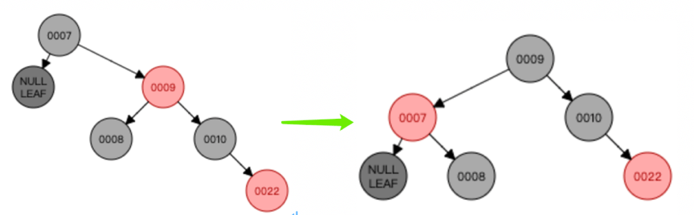
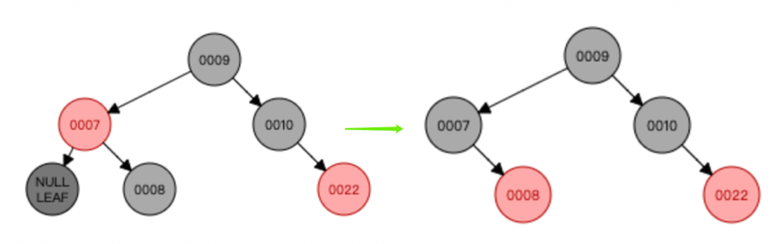
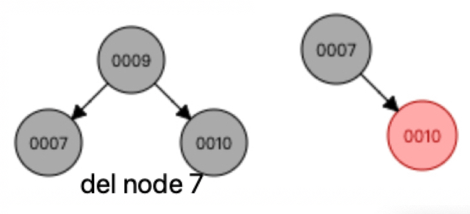
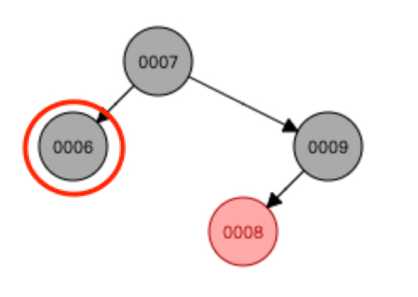
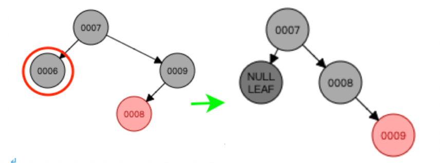

待删节点黑且 child 黑（难）
到这里待删节点已删除，我们关注的是孩子节点 child（child 不存在时，用虚拟的黑色节点代替）；
还记得我们上面定义的 parent 节点么？parent 的用处来了，用来拿到 child 的兄弟节点；
在这里我们将兄弟节点记为 other 节点（引用上述博客中的代码）；
此时我们需要根据兄弟节点（other）的状态来做一些变换；
我们将节点 child 改名成关注节点 node；
共分为4个情况（parent颜色无需关注）：
- 关注节点 node 的兄弟节点 other 是红色；
- 关注节点 node 的兄弟节点 other 是黑色，且 other 的左右孩子都是黑色；
- 关注节点 node 的兄弟节点 other 是黑色，且 other 左孩子为黑，右孩子为红；
- 关注节点 node 的兄弟节点 other 是黑色，且 other 右孩子为红。
注意：进入以下分支之前，明确的是关注节点 node（或虚拟节点）已经是黑色的；
此时千万不要纠结删除功能，删除我们已经做完了；
也不要纠结关注节点的子节点，因为不会以关注节点来进行旋转操作，所以其孩子关系不会打乱；
我们关注的是节点 node 与其兄弟节点 other（含子节点），把什么前驱后继节点统统忘记吧。
我们现在要做的是变换调整
case 1 - other 为红
关注节点 node 的兄弟节点 other 是红色，此时不用关注 other 的左右孩子；
操作步骤：
- 将兄弟节点 other 染黑，父节点 parent 染红；
- 以 parent 为中心左旋；
- 关注节点不变，other 节点改变；
- 继续从 4 种情况中选择合适的规则来调整变换。
模拟数据：
我们先构建一个满足上述条件的红黑树；
先后插入以下数据：（7, 6, 9, 8, 10, 22），构建出来的树如下：

为了方便理解，我们这里把删除功能表现出来了，即：删除节点 6 后，此时关注节点是虚拟的 node，并且 node 的兄弟节点 other 是红色；变换调整如下图：

那么现在的情况是：
关注节点是黑色，且兄弟节点是黑色，且兄弟节点的左右孩子都是黑色（虚拟）；
也就是进入了下面的 case2。
case 2 - other 与 2 个孩子全黑
关注节点 node 的兄弟节点 other 是黑色，且 2 个孩子都是黑色（没有则是 2 个黑色的虚拟节点）；
操作步骤：
- 将关注节点的兄弟节点 other 染红；
- 关注节点变成其parent，parent 重新赋值；
- 如果没完成，需要继续从4种情况中选择合适的规则来调整变换。
如下图图示：

上图中的 parent 为红，此时调整已经完成。
如果父为黑色，染红 other 时，经过 other 路径会少一个黑色，但此时父已经是根节点了
如下图示：

PS: 经过这里，其实已经结束调整了，不会继续走其他case了。如有其他情况，还望告知，谢谢。
case 3 - other 黑且其子左红右黑
关注节点 node 的兄弟节点 other 是黑色，且左孩子是红色，右孩子是黑色（含 null）；
操作规则：
- 将兄弟节点 other 的左孩子染黑，other 染红（交换颜色）；
- 围绕兄弟节点 other 右旋；
- 关注节点不变，兄弟节点 other 重新赋值；
- 调整后调到 case 4；
模拟数据：
我们先构建一个满足上述条件的红黑树；
先后插入以下数据：（7, 6, 9, 8），构建出来的树如下：

为了方便理解，这里也把删除功能表现出来了，即：删除节点6后，此时关注节点是虚拟的 node，并且 node 的兄弟节点other是黑色，左孩子是红色，按规则处理如下图示：

接着进入 case 4。
case 4 - other 黑且其子左黑右红
关注节点 node 的兄弟节点 other 是黑色，且左孩子是黑色（含 null），右孩子是红；
操作规则是：
- 将 other 设为node父节点相同的颜色；
- parent染黑，other右孩子染黑；
- 围绕parent左旋；
- 调整结束。
如下图示：

删除节点总结
参考资料中，一些总结非常到位，不再啰嗦了，列出自己的一些心得：
- 删除确实难，主要是因为关系没有理清楚，在进入调整前，我们必须明确关注节点现在已经是黑色的，千万不要搞错关注节点；
- 千万不要去想象多层级时的关系，经变换操作后，此时的待删节点只有一个孩子（没有则想象虚拟的黑色节点）；
- 规则不要强行记忆，case 1 与 case2 是成对出现的，同样 case 3 与 case4 也是成对出现的；
- 可在 https://www.cs.usfca.edu/~galles/visualization/RedBlack.html 进行数据模拟测试；